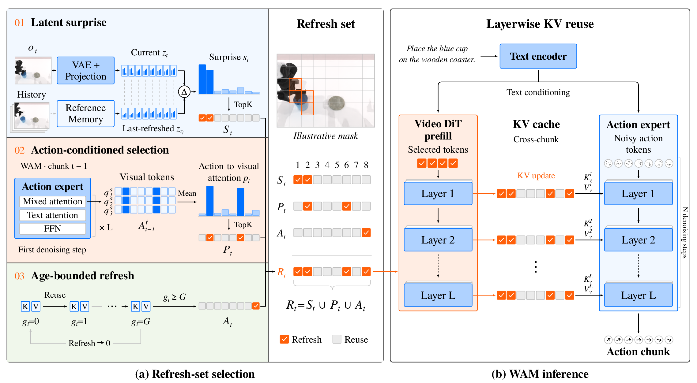

Abstract
World Action Models (WAMs) enable generalist robot manipulation by conditioning an action expert on representations from a pretrained video Diffusion Transformer (DiT). In closed-loop control, the video DiT runs at every chunk to encode the current observation into layerwise key–value (KV) pairs that the action expert queries. This prefill dominates the per-chunk computational cost, yet existing training-free accelerations leave it fully dense. We present WAM-Cache, a training-free framework that retains layerwise key–value representations across chunks and recomputes only a sparse refresh set of tokens. Crucially, we find that the intuitive heuristic of refreshing visually drifted tokens plateaus far below the dense baseline, even with an oracle predicting ground-truth KV drift. Downstream action accuracy is instead governed by where the action expert attends, not by what moved. WAM-Cache therefore selects the refresh set by uniting the action expert’s cross-attention with visual latent surprise, complemented by a strict age bound that suppresses compounding error. On Fast-WAM, WAM-Cache cuts video DiT prefill FLOPs by 32–42% across RoboTwin 2.0, LIBERO, and real-world experiments, while staying within 0.7–1.8 percentage points of the dense policy in simulation and 2.5 points on a real robot.

Scroll sideways to see the whole figure.
WAM-Cache, step by step
The video walks through steps 01 to 03 of (a) on chunk t of one RoboTwin 2.0 episode. Between chunk t−1 and chunk t, only the arm moves.
Efficiency
WAM-Cache comes in two settings. The default cuts the prefill FLOPs by 41.6% on RoboTwin 2.0 and 32.3% on LIBERO, within 1.8 and 0.65 points of the dense policy. The larger budget still saves 28.2% and 26.1%. It comes within 0.1 points of dense on RoboTwin 2.0 and matches it on LIBERO.
SR is the success rate in %. RoboTwin 2.0 uses clean scenes, and LIBERO is the average over its four suites. The default uses (ba, bs) = (0.4, 0.1) on RoboTwin 2.0 and (0.5, 0.1) on LIBERO. The larger budget uses (0.6, 0.1) on both.
BibTeX
@misc{ding2026wamcachestalenessboundedkvreuse,
title={WAM-Cache: Staleness-Bounded KV Reuse for Efficient World Action Models},
author={Kai Ding and Yang He and Ruijie Quan and Yi Yang},
year={2026},
eprint={2610.11401},
archivePrefix={arXiv},
primaryClass={cs.RO},
url={https://arxiv.org/abs/2610.11401},
}